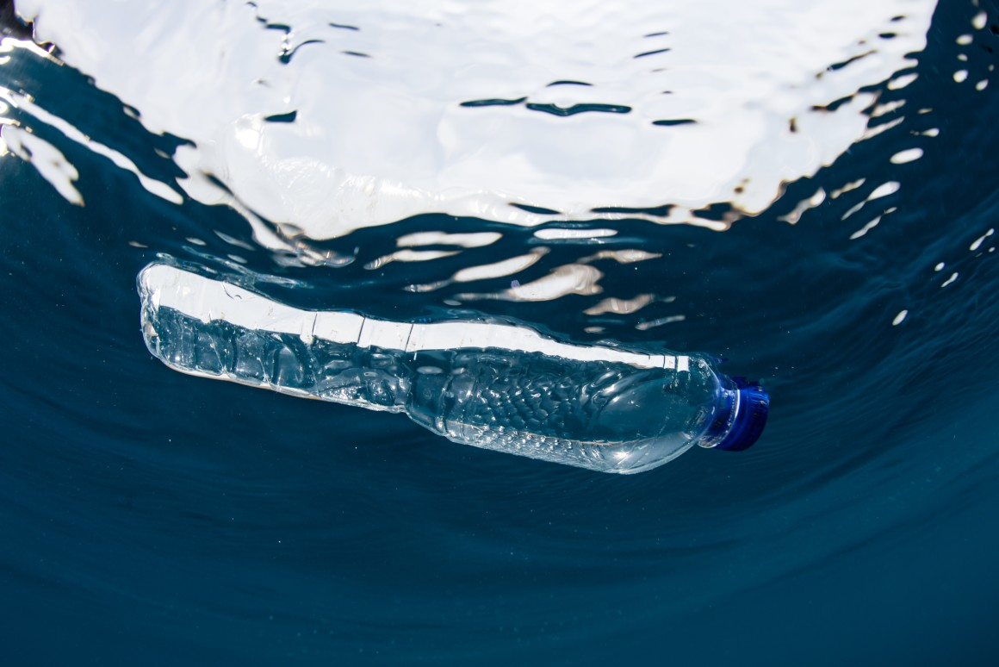
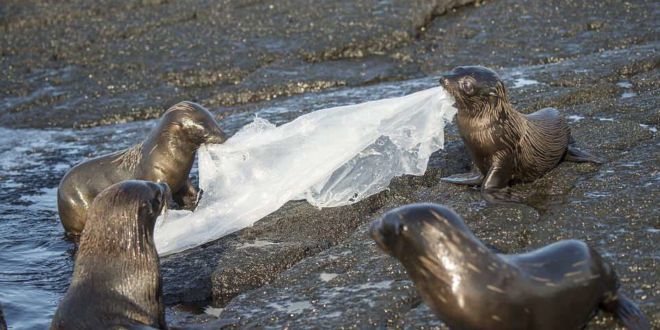

¿Qué es el plástico?
El plástico es hecho con polímeros de compuestos orgánicos, es un material sintético que se puede moldear fácilmente, además contiene sustancias derivadas de petroquímicos. La basura en los océanos ha llegado a crear enormes islas de plástico en los grandes océanos de la Tierra. Actualmente, existen 5 islas que se han formado allí donde confluyen las corrientes oceánicas. La isla más grande es la del Pacífico, que cuenta con un tamaño similar al de España, Francia y Alemania juntas.

¿Cómo afecta el plástico a los oceános?
El medio marino es el más afectado y su degradación es más perjudicial que en tierra. Además, recibe el mayor porcentaje de los deshechos plásticos. Según informes, reciben más de 200 kilos de plástico por segundo. Entre 2010 y 2013 científicos que estudiaban el cambio climático en los océanos detectaron 5 islas formadas por este material (2 en el Pacífico, 2 en el Atlántico y 1 en el Índico). 13 millones de toneladas de plástico, desastrosamente terminan en el océano. Al año, cerca de 100 mil especies mueren al año por el plástico. Es conocido el caso de tortugas y aves marinas que han muerto por la ingesta de plástico que les ocasiona enredos, asfixia, estrangulación o desnutrición.

¿Qué causa el plástico en los animales?
La ingesta de plásticos por los animales les provoca laceraciones, heridas internas e incluso la muerte. Pero los organismos acuáticos no solo mueren por su ingesta, en otros casos mueren por quedar atrapados. También puede afectar a la fisiología de los animales. En algunas tortugas marinas se ha observado que debido a los plásticos que tienen en su estómago e intestinos, flotan y, por tanto, no pueden hundirse para buscar comida y finalmente mueren.
Consecuencias en los animales:
- Las tortugas no pueden distinguir entre bolsas de plástico y medusas, que son parte de su dieta. Las bolsas de plástico, una vez que se consumen, causan bloqueos internos y suelen provocar su muerte.
- Pedazos de plástico más grandes también pueden dañar los sistemas digestivos de las aves marinas y las ballenas. Por ello, están matando a más de un millón de aves marinas y unos 100.000 mamíferos y tortugas marinas cada año.
- El material plástico afecta a la fauna de dos maneras importantes: cuando las criaturas se enredan en él y cuando lo ingieren.
- De esta manera, millones de animales de más de 370 especies de todo el mundo comen plástico, incluso el plancton más microscópico.
- El plástico en el ambiente se va fragmentando en trocitos cada vez más diminutos que atraen y acumulan sustancias tóxicas.
- La presencia de toxinas en la vida animal, flora y reservas naturales que acaban siendo consumidas por el ser humano, es más que evidente.
- Algunos aditivos usados para la fabricación de plástico convierten en tóxicos ciertos alimentos al entrar en contacto con ellos, provocando problemas de salud.
¿Cómo afecta el plástico al aire?
La contaminación del aire por plástico es algo de lo que muchos no somos conscientes, pero lo cierto es que afecta a la salud sin darnos ni cuenta. La fabricación, de por sí, libera una cantidad variada de toxinas en el aire, pero además de ello, muchos de los plásticos a nivel mundial son quemados liberando así muchos otros componentes tóxicos que nos provocan problemas de salud.
En cuestiones del aire, la producción de plástico libera gran cantidad de toxinas en el ambiente, también cuando se es quemado, tanto así que el plástico es uno de los principales contaminantes del medio ambiente.
Datos interesntes sobre el plástico y cómo contamina el planeta
- 10% de la contaminación en el mundo es por el plástico.
- Al año, se fabrican más de 500 billones de bolsas en el mundo.
- Los plásticos están formados por carbono y proceden del petróleo, por lo que su quema, a parte de otros compuestos peligrosos, libera gases de efecto invernadero.
- Solo en Estados Unidos se estiman que usan más de 100 billones de bolsas de plástico.
- El plástico tarda al menos 150 años en descomponerse.
- Un tercio de todos los residuos plásticos acaba en suelos y aguas. La mayor parte de este plástico se desintegra en partículas de menos de 5 milímetros, conocidas como microplásticos, y estas se descomponen aún más hasta llegar a ser nanopartículas. El problema es que estas piezas microscópicas, al ser tan diminutas, están entrando en la cadena alimenticia sin darnos ni cuenta.